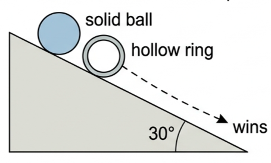
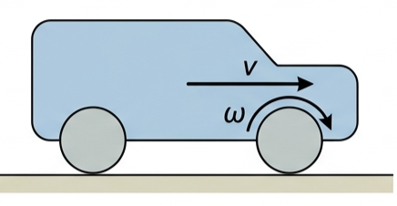
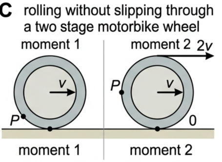
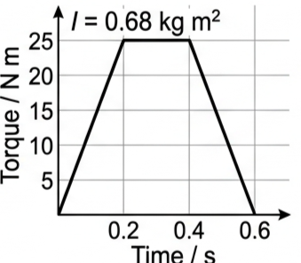
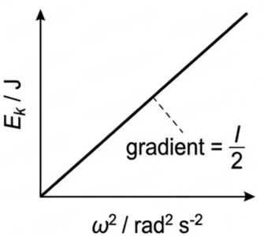
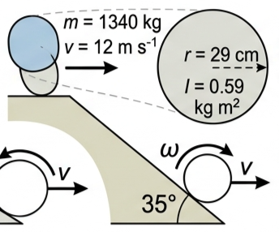

Part of A.4 Rigid Body Mechanics
· Unit A — IB Physics 2023
4 Lesson 4 of 5 · A.4 Rigid Body Mechanics
Rotational Kinetic Energy
A spinning object carries kinetic energy just like a moving one. This lesson gives you the rotational analogue of ½mv², then shows how a rolling object splits its energy between translation and spin — and why that always makes it slower than something sliding down the same slope.
🛼 Hook – the ball that always beats the ring
Release an identical-looking solid ball and a hollow ring together at the top of a ramp. Every time, the ball reaches the bottom first — even though both fall through the same height and start with the same gravitational potential energy. Some of the ring's potential energy is being diverted somewhere the ball's isn't.

Fig 1 — Same height, same start, same total energy released — but the ball always wins the race down the slope.
💡 Diagnostic question (think – then read on) — both objects fall through the same height, so both start with the same \(mg\Delta h\). Why doesn't the ring keep pace with the ball? For a rolling object, \(mg\Delta h = \tfrac12mv^2 + \tfrac12I\omega^2\) — potential energy splits between translational and rotational kinetic energy. The ring has a larger moment of inertia for its mass and radius than the solid ball, so more of its share goes into spinning and less into forward speed \(v\).
🔄 Rotational kinetic energy — the linear analogy
From Topic A.3, a moving object's linear kinetic energy can be written two ways:
Linear kinetic energy
$$E_{\text{k}} = \tfrac{1}{2}mv^2 = \frac{p^2}{2m}$$
Knowing this, we can write down the equivalent equations for rotational kinetic energy by analogy — swap \(m \to I\), \(v \to \omega\), and \(p \to L\):
Rotational kinetic energy · SI unit J
$$E_{\text{k}} = \tfrac{1}{2}I\omega^2 = \frac{L^2}{2I}$$
It is common for an object to have both linear and rotational kinetic energy at once — the wheel on a bicycle, for example, translates along the road and spins about its axle simultaneously.

Fig 2 — A moving car has both kinds of kinetic energy at once: the body translates at \(v\), and each wheel also spins at \(\omega\).
🛞 Rolling without slipping
We assume there is sufficient surface friction to prevent any slipping or sliding — this means there is no relative motion between the lower surface of the rotating object and the surface it moves on. This is called rolling.
Consider a wheel of radius \(r\) rotating with angular speed \(\omega\). All points on its circumference move with linear speed \(v = \omega r\) relative to the axle. If point P on the rim is in contact with the road, rolling without slipping requires P to be momentarily stationary relative to the road — so the axle (and the whole vehicle) moves at \(v\), while the point diametrically opposite, at the top of the wheel, moves at \(2v\) relative to the road.

Fig 3 — Moving wheel showing instantaneous speeds relative to the road. The contact point P is momentarily stationary; the axle moves at \(v\); the top of the wheel moves at \(2v\).
📖 Because the contact point has zero velocity relative to the road, the frictional force there does no work — no energy is dissipated at that point. (This is a simplified interpretation.)
⚠️ Common mistake — when a vehicle accelerates, many students think there is just one frictional force, acting against the direction of motion. But all forces occur in pairs: friction pushes backwards on the road, and (Newton's third law) an equal and opposite force pushes forwards on the vehicle. This is the force that accelerates the vehicle or opposes air resistance. Only when there is no forward propulsion does friction on the vehicle act opposite to its motion.
📈 Graphs for rotational energy and momentum
Graph type
Axes (X, Y)
Shape
What to read
Torque–time (spin-up)
Time / s · Torque / N m
Rises, plateaus, falls back to zero (trapezoid)
Area = angular impulse = \(\Delta L = I\Delta\omega\)
Rotational \(E_{\text{k}}\)–\(\omega^2\)
\(\omega^2\) / rad² s⁻² · \(E_{\text{k}}\) / J
Straight line through the origin
Gradient \(= I/2\)
\(\omega\)–time (uniform angular acceleration)
Time / s · \(\omega\) / rad s⁻¹
Straight line, positive gradient
Gradient = angular acceleration \(\alpha\); area under the line = angular displacement \(\theta\)

Fig 6 — Torque–time graph for a stationary system, \(I = 0.68\) kg m². The area under the curve is the angular impulse, \(\Delta L\).

Fig 7 — Rotational \(E_{\text{k}}\) plotted against \(\omega^2\) is a straight line through the origin, with gradient \(I/2\).
✍️ Worked example 1 – a car's total kinetic energy (A4.14)
A car of mass 1340 kg is moving with a speed of 12 m s⁻¹. (a) Calculate its linear kinetic energy. (b) If each wheel and tyre (of four) has a radius of 29 cm and a moment of inertia of 0.59 kg m², determine its rotational kinetic energy. (c) What is the total kinetic energy of the car?
1
Identify: the car body has linear KE; each of the four wheels has rotational KE about its axle, since it rolls without slipping (\(\omega = v/r\)).
Fig 4 — Geometry for Worked example 1. Four wheels each contribute rotational KE on top of the body's linear KE.
✍️ Worked example 2 – a ball rolling down a slope (A4.15)
Consider a solid sphere, for which \(I = \tfrac25mr^2\). Remembering that \(v = \omega r\), the energy equation \(mg\Delta h = \tfrac12mv^2 + \tfrac12I\omega^2\) becomes \(g\Delta h = \tfrac{7}{10}\omega^2r^2\) (mass cancels). Determine the (a) angular speed and (b) linear speed of the centre of mass of a 500 g ball, which has a radius of 10 cm, after it has rolled down a slope of vertical height 1.0 m.
1
Identify: a solid sphere rolling without slipping, so \(I = \tfrac25mr^2\) and \(v = \omega r\). Mass cancels from the combined energy equation, so the result does not depend on the ball's mass.
2
Data: \(m = 500\) g (cancels), \(r = 0.10\) m, \(\Delta h = 1.0\) m, \(g = 9.8\ \text{m s}^{-2}\).
Answer (a): \(\omega = 37\ \text{rad s}^{-1}\). (b): \(v = \omega r = 37 \times 0.10 = 3.7\ \text{m s}^{-1}\). Note this speed does not depend on the slope angle or the ball's mass — only on \(r\) and \(\Delta h\).

Fig 5 — Geometry for Worked example 2. At the bottom, the ball's original PE has become a mix of translational KE (\(v\)) and rotational KE (\(\omega\)).
🌍 Real-world: braking, tyres and energy in a crash
When a car brakes to a stop, every joule of kinetic energy it carries has to be dissipated as heat in the brakes (and tyres). That energy budget isn't just \(\tfrac12mv^2\) for the body — every one of the four spinning wheels also carries rotational KE that must be brought to zero.
✓ Examiner tip: if a question asks for the total kinetic energy "lost" by a braking car, always add the rotational KE of the wheels (\(4 \times \tfrac12I\omega^2\)) to the body's linear KE — leaving it out is a very common mark loss.
🚀 HL Extension – why sliding always beats rolling on the same slope
For any object rolling down a slope, write \(I = kmr^2\), where \(k\) is a shape factor (\(k = \tfrac25\) for a solid sphere, \(k = \tfrac23\) for a hollow sphere, \(k = 1\) for a thin hoop). The energy equation then rearranges to:
$$v^2 = \frac{2g\Delta h}{1+k}$$
A sliding (frictionless, non-rotating) object has \(k = 0\), giving the largest possible \(v\) for a given height — no energy is ever diverted into spin. Challenge: which is faster at the bottom, a solid ball (\(k=\tfrac25\)) or a hollow sphere (\(k=\tfrac23\)), released from the same height? (Answer: the solid ball — its smaller \(k\) means a larger share of the available energy converts to translational KE.)
⚠️ Trap corner – common mistakes
Misconception
Correct view
The wheel–road contact point is moving forward
It is instantaneously stationary relative to the ground when the wheel rolls without slipping
Friction always opposes a car's motion
Friction from the road can propel the car forward; it only opposes the wheel's spin, and Newton's third law gives an equal forward reaction on the vehicle
A sliding object and a rolling object of the same mass reach the same speed down the same slope
The rolling object diverts some PE into rotational KE, so it arrives slower
A bigger moment of inertia means faster spin
For the same energy or angular momentum, a bigger \(I\) gives a slower \(\omega\), since \(E_{\text{k}} = \tfrac12I\omega^2 = L^2/2I\)
⚠️ Most common slip: writing \(mg\Delta h = \tfrac12mv^2\) alone for a rolling object and forgetting the \(\tfrac12I\omega^2\) term entirely — that equation only applies to frictionless sliding.
Ek = ½Iω² = L²/2Iv = ωr (rolling)mgΔh = ½mv² + ½Iω²contact point: v = 0top of wheel: v = 2v(axle)solid sphere: I = ⅖mr²sliding beats rollingbigger I ⇒ slower down slope
Practice check — multiple choice
1. A flywheel's rotational kinetic energy, written in terms of angular momentum \(L\) and moment of inertia \(I\), is
A \(E_{\text{k}} = IL^2/2\)
B \(E_{\text{k}} = L^2/2I\)
C \(E_{\text{k}} = 2IL^2\)
D \(E_{\text{k}} = L/2I\)
2. A wheel of radius \(r\) rolls without slipping at translational speed \(v\). The speed of the point on the wheel touching the ground is
A \(v\)
B \(2v\)
C zero
D \(v/2\)
3. A solid ball and a hollow ball, of equal mass and radius, roll from rest down the same slope. Which reaches the bottom with the greater linear speed?
A The hollow ball, because it has the larger moment of inertia
B The solid ball, because less of its energy is diverted into rotation
C They arrive with the same speed, since mass and radius are equal
D The hollow ball, because it rotates faster
4. A frictionless sliding block and a rolling ball of the same mass are released from rest at the top of the same slope. Which reaches the bottom first?
A The ball, because it has more total kinetic energy
B The block, because none of its energy diverts into rotation
C They arrive together, since both started with the same potential energy
D Neither reaches the bottom without friction
5. The area under a torque–time graph, for a torque that increases uniformly from zero, is equal to
A the final angular velocity
B the moment of inertia
C the change in angular momentum
D the rotational kinetic energy
Practice check — fill in the blanks
Complete the statements:
Rotational kinetic energy \(E_{\text{k}} = \tfrac12I\omega^2\) can also be written as \(L^2\) divided by twice the . For a wheel rolling without slipping, the point touching the ground has an instantaneous speed of relative to the ground, the axle moves at speed , and the top of the wheel moves at . A solid sphere has a moment of inertia of \(mr^2\). When a ball rolls down a slope, gravitational potential energy is shared between translational kinetic energy and kinetic energy.
Exam‑style questions
Exam question · Show that
Q18. An object which has a moment of inertia of 4.8 kg m² is initially at rest. A torque is then applied which increases uniformly from zero until the object is rotating with an angular velocity of 79 rad s⁻¹ after 23 s. Show that the maximum torque applied was approximately 30 N m. [3 marks]
✓ Change of angular momentum \(\Delta L = I\Delta\omega = 4.8 \times 79 = 379\ \text{kg m}^2\text{s}^{-1}\). ✓ For a torque rising uniformly from zero, the angular impulse is the area of a triangle: \(\Delta L = \tfrac12\tau_{\text{max}} \times 23\). ✓ \(\tau_{\text{max}} = 2 \times 379/23 = 33\ \text{N m}\), close to the target value of about 30 N m.
Exam question · Determine
Q19. A solid sphere of mass 1.47 kg and radius 12 cm is rotating about a diameter with an angular speed of 57 rad s⁻¹. Determine what constant torque will bring it to rest in 10.0 s. [3 marks]
Q20. Fig 6 shows the variation of torque applied to a stationary system that has a moment of inertia of 0.68 kg m². (a) Estimate the change of angular momentum of the system. (b) Predict a value for its final angular velocity. [4 marks]
✓ (a) \(\Delta L\) = area under the torque–time graph in Fig 6 ≈ 10 N m s (kg m² s⁻¹). ✓ (b) The system started at rest, so \(\Delta\omega = \Delta L / I = 10/0.68 = 15\ \text{rad s}^{-1}\) is also the final angular velocity.
Exam question · Calculate
Q21. Calculate the rotational kinetic energy of a tossed coin if it has a mass of 8.7 g, radius 7.1 mm and completes one rotation in 0.52 s. [3 marks]
Q22. Calculate the rotational kinetic energy of the Earth spinning on its axis. (Research relevant information.) [3 marks]
✓ Using \(M \approx 5.97\times10^{24}\) kg, \(R \approx 6.37\times10^{6}\) m, \(T = 24\) h \(= 8.64\times10^{4}\) s, and treating Earth as a uniform sphere, \(I = \tfrac25MR^2 \approx 9.7\times10^{37}\ \text{kg m}^2\). ✓ \(\omega = 2\pi/T = 7.27\times10^{-5}\ \text{rad s}^{-1}\). ✓ \(E_{\text{k}} = \tfrac12I\omega^2 \approx 2.6\times10^{29}\ \text{J}\).
Exam question · Calculate
Q23. A flywheel is spinning with rotational kinetic energy of 4.6 × 10⁴ J. Calculate its moment of inertia if it has an angular momentum of 98 kg m² s⁻¹. [2 marks]
Q24. The moment of inertia of a windmill is 96 kg m². Estimate how many rotations every minute are needed for it to have 250 J of kinetic energy. [3 marks]
Q25. A string is wrapped around a wheel of radius 24 cm and provides a torque as an attached mass accelerates downwards, starting the wheel rotating. (a) Write down an equation to represent the transfer of energy when the mass has fallen a distance \(h\). (b) Calculate a value for the moment of inertia of the wheel if a mass of 500 g is moving down with a speed of 1.14 m s⁻¹ after falling a distance of 50 cm. [5 marks]
✓ (a) \(mgh = \tfrac12mv^2 + \tfrac12I\omega^2\), with \(\omega = v/r\) since the string does not slip on the wheel. ✓ \(mgh = 0.500 \times 9.8 \times 0.50 = 2.45\ \text{J}\); \(\tfrac12mv^2 = 0.5 \times 0.500 \times 1.14^2 = 0.325\ \text{J}\). ✓ Remainder \(= 2.45 - 0.325 = 2.125\ \text{J} = \tfrac12I\omega^2\), with \(\omega = 1.14/0.24 = 4.75\ \text{rad s}^{-1}\). ✓ \(I = 2\times2.125/4.75^2 = 0.19\ \text{kg m}^2\).
Exam question · State / Show that
Q26. A cyclist is moving to the right with a constant linear speed of 4.0 m s⁻¹. (a) State the linear speed of all points on the circumference of the wheel (with respect to the bicycle). (b) State the speed of the lowest point of the wheel with respect to the ground. (c) Show that the angular speed of the wheel is approximately 15 rad s⁻¹. (d) What is the instantaneous velocity of the top of the wheel, with respect to the ground? [5 marks]
✓ (a) Relative to the bicycle/axle, every point on the rim moves at the same speed \(\omega r = v = 4.0\ \text{m s}^{-1}\) (in different directions). ✓ (b) Zero — the contact point is instantaneously stationary relative to the ground (rolling without slipping). ✓ (c) Reading a wheel radius of about 0.27 m from the picture: \(\omega = v/r = 4.0/0.27 \approx 15\ \text{rad s}^{-1}\). ✓ (d) \(2v = 8.0\ \text{m s}^{-1}\), in the same direction as the bicycle's travel, relative to the ground.
Exam question · Discuss
Q27. A solid ball and a hollow ball of the same mass and radius roll down a hill. At the bottom, discuss which ball (a) will be rotating faster (b) has the greater linear speed. [3 marks]
✓ Writing \(I = kmr^2\) (\(k=\tfrac25\) solid, \(k=\tfrac23\) hollow), \(v^2 = 2g\Delta h/(1+k)\), so the solid ball (smaller \(k\)) reaches the higher \(v\). ✓ Since \(r\) is equal for both and \(\omega = v/r\), the solid ball also has the higher \(\omega\). ✓ (a) The solid ball rotates faster. (b) The solid ball also has the greater linear speed.
Exam question · Calculate / Compare
Q28.(a) Calculate the greatest (i) angular speed (ii) linear speed of a solid ball of radius 1.2 cm rolling down a slope from a vertical height of 6.0 cm. (b) What assumption did you make? (c) Compare your answer to the greatest speed of the same ball dropped the same vertical distance. [5 marks]
✓ (a)(ii) \(v^2 = \tfrac{10}{7}g\Delta h = \tfrac{10}{7} \times 9.8 \times 0.06 = 0.84\), so \(v = 0.92\ \text{m s}^{-1}\). ✓ (a)(i) \(\omega = v/r = 0.92/0.012 = 76\ \text{rad s}^{-1}\). ✓ (b) Assumption: the ball rolls without slipping, and no energy is lost to air resistance. ✓ (c) Free fall (or frictionless sliding) from the same height gives \(v = \sqrt{2g\Delta h} = \sqrt{2\times9.8\times0.06} = 1.08\ \text{m s}^{-1}\), faster than the rolling ball because none of its energy is diverted into rotation.
Exam question · Write down
Q29. Use the analogies between linear and rotational mechanics to write down equations for rotational work and power. [2 marks]
✓ Linear work \(W = Fs\) becomes rotational work \(W = \tau\theta\). ✓ Linear power \(P = Fv\) becomes rotational power \(P = \tau\omega\).
Exam question · Identify / State (Inquiry: Exploring and designing)
Q30. A student wishes to investigate balls rolling down slopes. Identify all the possible variables involved, and select one independent and one dependent variable that could be investigated. State how the other variable would be controlled. [4 marks]
✓ Possible variables: ball radius, ball mass, moment-of-inertia type (solid/hollow), slope angle, slope surface/friction, release height, ramp length. ✓ Independent variable (example): ball radius. Dependent variable: time to reach the bottom (or final speed). ✓ Controlled variables: slope angle, surface material/friction, release height, ball material/density — so only the radius changes between trials.